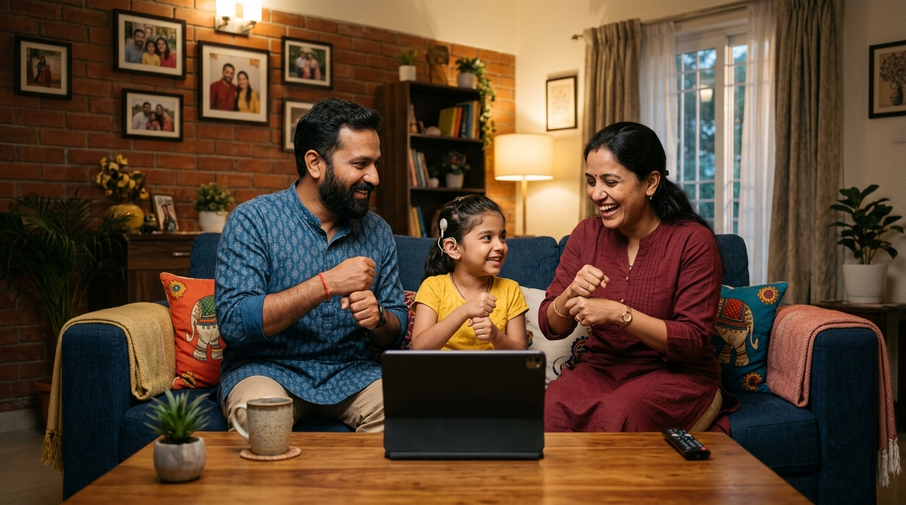

ISL at Home — Connecting Families
Parents and siblings learn Indian Sign Language naturally alongside their deaf child. Family interactive lessons, bedtime story mode, and homework help — all in one accessible app.

Family Features
Family ISL Learning Mode
Parents and siblings learn sign language through interactive daily lessons alongside their deaf individual.
Bedtime Story Mode
Popular Indian children's stories narrated in both speech and ISL - perfect for bedtime routines.
Homework Help
ISL explanations for school subjects - deaf children understand homework without relying on parents to sign.
Parent-Child Communication
Real-time two-way communication between hearing parents and deaf children on shared family tablet.
Grandparent Mode
Simplified UI with large text and slow-paced signing - designed for elderly family members.
Progress Tracking
Track your family's ISL learning progress - weekly reports and achievement badges.
Why Family Matters
68 million deaf and hard-of-hearing Indians live in a hearing world. Most deaf children grow up in hearing families who don't know sign language. SignISL bridges that gap - at home, every day.
of deaf children are born to hearing parents - most families have no way to communicate in ISL.
"SignISL changed how I communicate with my daughter. For the first time, she could understand everything I was trying to say."